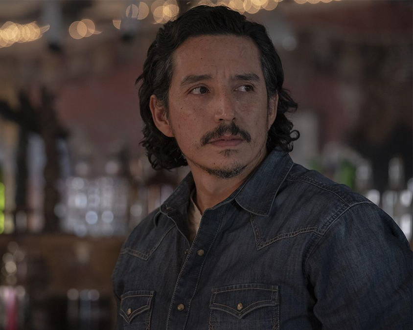
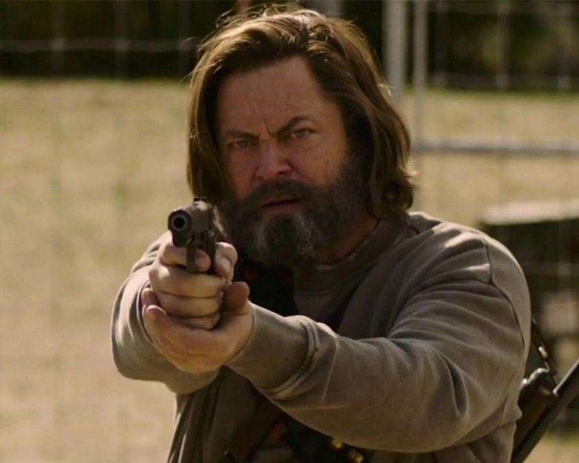
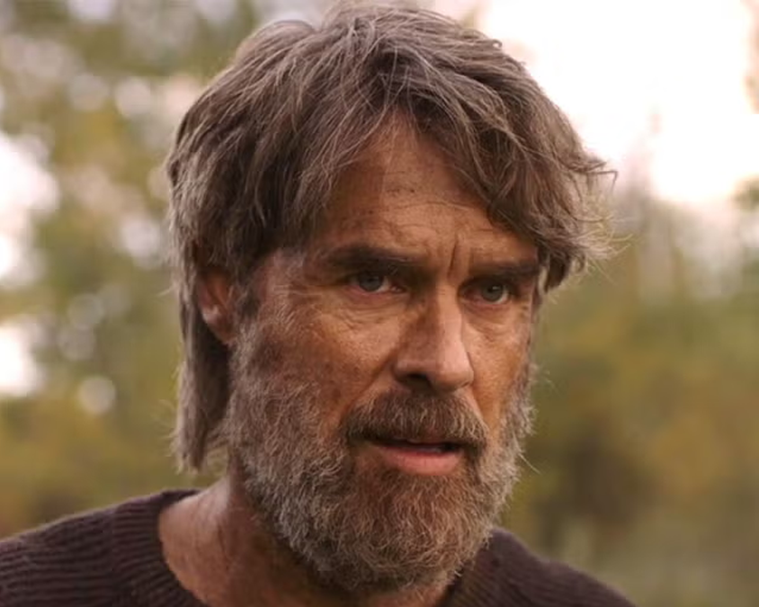
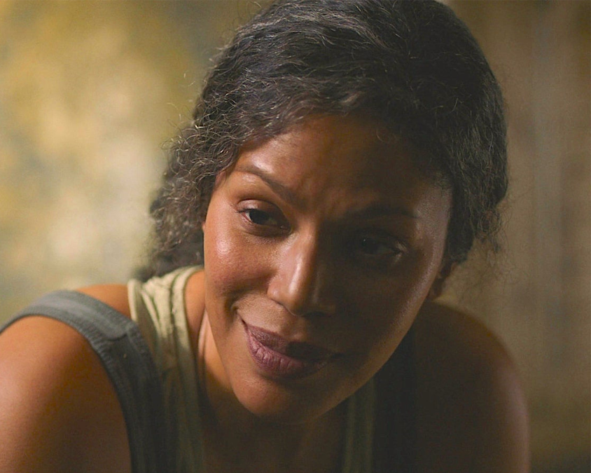
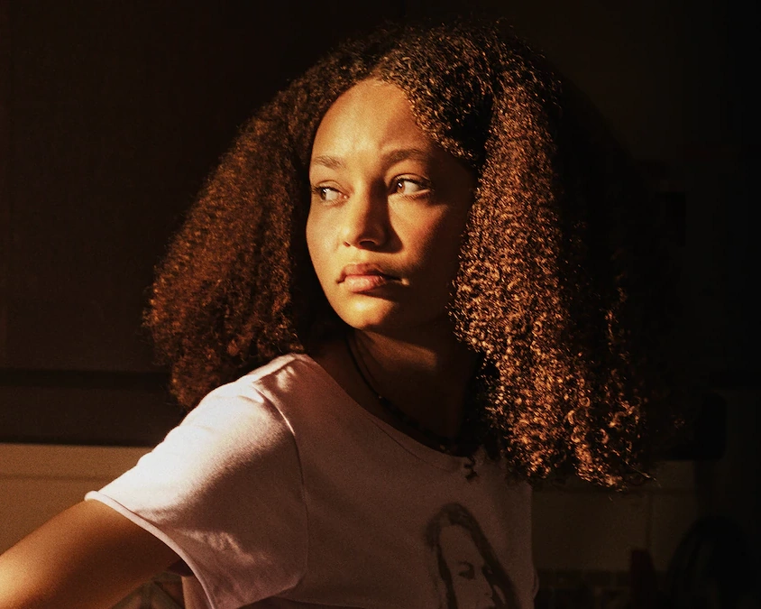

Personajes Principales
Joel Miller

Un superviviente endurecido que ha perdido a su hija al comienzo del brote. Se convierte en una figura paterna reacia para Ellie, a quien debe transportar a través del país.
Ellie Williams

Una adolescente valiente e inmune a la infección, lo que la convierte en la esperanza de la humanidad para encontrar una cura.
Personajes Secundarios
Tess

Compañera de contrabando de Joel y una aliada crucial en los primeros días de su viaje con Ellie. Es pragmática y leal.
Tommy Miller

El hermano de Joel, que ha encontrado una comunidad estable y próspera, ofreciendo a Joel una visión de una vida diferente.
Bill

Un superviviente solitario y paranoico que ha construido una fortaleza para protegerse, y tiene una historia compleja con Joel.
Frank

La pareja de Bill, cuya relación es explorada en un episodio que profundiza en el amor y la supervivencia en el apocalipsis.
Marlene

La líder de las Luciérnagas, un grupo paramilitar que busca una cura. Es quien encarga a Joel la misión de transportar a Ellie.
Sarah Miller

La hija adolescente de Joel, cuya trágica muerte al inicio del brote marca profundamente a su padre y define su personaje.